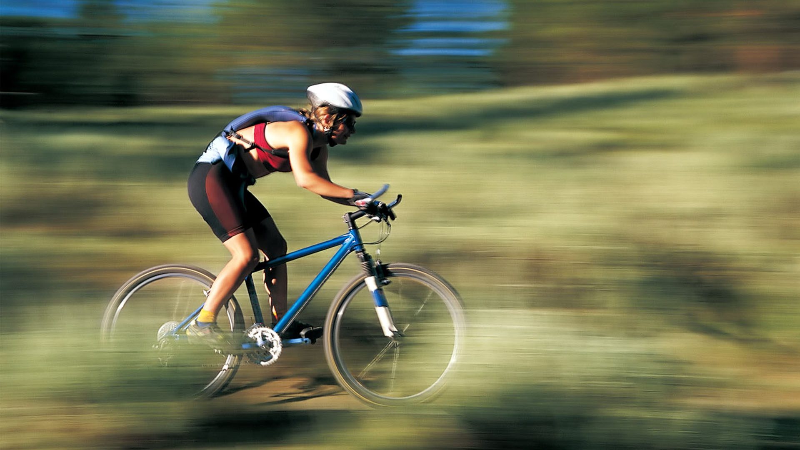

1/2
Valverde wint zesde rit in Ronde van Spanje
De 29-jarige Luxemburger van Trek kwam afgelopen zomer zwaar ten val tijdens de derde etappe in de Ronde van Frankrijk. De klimmer liep daarbij onder meer scheurtjes in de kniebanden op. "Het is niet een beslissing die ik heb genomen, maar mijn knie", doelde een geëmotioneerde Schleck op zijn fysieke problemen. "Ik ben altijd teruggekomen van tegenslag, maar nu is dat onmogelijk." "De pijn kwam steeds maar weer terug. Het fietsen zit erop voor mij, in elk geval in professionele zin. Ik wil mijn ploeg Trek bedanken dat ze altijd achter me zijn blijven staan."

Virgil van Dijk en Erik Pieters zijn voor de EK-kwalificatiewedstrijd tegen Kazachstan buiten de selectie van Oranje gelaten. Dat meldt de KNVB donderdag, een dag voor de wedstrijd die vrijdag om 20.45 uur begint